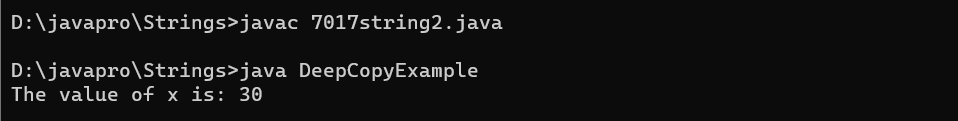
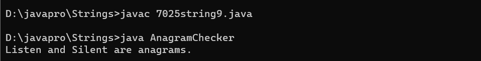
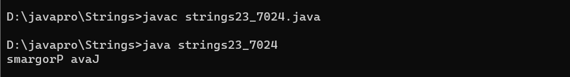
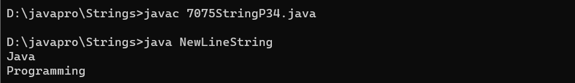

1.Program to Check if a String contains only digits?
CODE :-
class string1 {
// Function to check if a string
// contains only digits
public static boolean
onlyDigits(String str, int n)
{
// Traverse the string from
// start to end
for (int i = 0; i < n; i++) {
// Check if character is
// not a digit between 0-9
// then return false
if (str.charAt(i) < '0'
|| str.charAt(i) > '9') {
return false;
}
}
// If we reach here, that means
// all characters were digits.
return true;
}
// Driver Code
public static void main(String args[])
{
// Given string str
String str = "1a234";
int len = str.length();
// Function Call
System.out.println(onlyDigits(str, len));
}
}
OUTPUT :-
2.Program to perform Deep Copy for String?
CODE :-
class String2
{
// instance variable of the class ABC
int x = 30;
}
class DeepCopyExample
{
// main method
public static void main(String argvs[])
{
// creating an object of the class ABC
String2 obj1 = new String2();
// it will copy the reference, not value
String2 obj2 = new String2();
// updating the value to 6
// using the reference variable obj2
obj2.x = 6;
// printing the value of x using reference variable obj1
System.out.println("The value of x is: " + obj1.x);
}
}
OUTPUT :-

3. Program to prove String is immutable programmatically?
CODE :-
class E {
public static void check(Object x, Object y) {
if (x == y) {
System.out.println("Both pointing to the same reference");
}
else {
System.out.println("Both are pointing to different reference");
}
}
public static void main(String[] args) {
String x = "hello";
String y = "hello";
System.out.println("Before Modification");
check(x, y);
System.out.println("--------------------");
x += "world";
System.out.println("After Modification");
check(x, y);
}
}
OUTPUT :-
4.Program to remove all occurrences of a given character from input String?
CODE :-
import java.util.Scanner;
class RemoveCharacter {
public static void main(String[] args) {
Scanner scanner = new Scanner(System.in);
System.out.print("Enter a string: ");
String inputString = scanner.nextLine();
System.out.print("Enter the character to remove: ");
char charToRemove = scanner.next().charAt(0);
String result = removeCharacter(inputString, charToRemove);
System.out.println("Result: " + result);
scanner.close();
}
public static String removeCharacter(String inputString, char charToRemove) {
StringBuilder stringBuilder = new StringBuilder();
for (int i = 0; i < inputString.length(); i++) {
char currentChar = inputString.charAt(i);
if (currentChar != charToRemove) {
stringBuilder.append(currentChar);
}
}
return stringBuilder.toString();
}
}
OUTPUT :-
5.Program to append the string using StringBuffer class
CODE :-
import java.lang.*;
class s {
public static void main(String[] args)
{
StringBuffer s1 = new StringBuffer("Yaman ");
System.out.println("Input: " + s1);
s1.append(true);
System.out.println("Output: " + s1);
System.out.println();
StringBuffer s2 = new StringBuffer("Sahota");
System.out.println("Input: " + s2);
s2.append(false);
System.out.println("Output: " + s2);
}
}
OUTPUT :-
6.Program to insert the string using StringBuffer class
CODE :-
class Insert {
public static void main(String[] args) {
// Create a StringBuffer
StringBuffer stringBuffer = new StringBuffer("Hello World!");
// Insert a string at a specific position
stringBuffer.insert(6, "Java ");
// Print the modified string
System.out.println("Modified String: " + stringBuffer.toString());
}
}
class AddCharactersToString {
public static void main(String[] args) {
// Create a StringBuilder
StringBuffer s = new StringBuffer("Hello, ");
// Add characters to the string
s.append("World");
// Print the final string
System.out.println(s.toString()); // Output: "Hello, World!"
}
}
OUTPUT :-
9.Program to Check Anagram
CODE :-
import java.util.Arrays;
class AnagramChecker {
public static boolean areAnagrams(String str1, String str2) {
str1 = str1.replaceAll("\\s", "").toLowerCase();
str2 = str2.replaceAll("\\s", "").toLowerCase();
if (str1.length() != str2.length()) {
return false;
}
char[] charArray1 = str1.toCharArray();
char[] charArray2 = str2.toCharArray();
Arrays.sort(charArray1);
Arrays.sort(charArray2);
return Arrays.equals(charArray1, charArray2);
}
public static void main(String[] args) {
String str1 = "Listen";
String str2 = "Silent";
if (areAnagrams(str1, str2)) {
System.out.println(str1 + " and " + str2 + " are anagrams.");
} else {
System.out.println(str1 + " and " + str2 + " are not anagrams.");
}
}
}
OUTPUT :-

10.Program to check whether a string is a Palindrome
CODE :-
class PalindromeString10
{
public static void main(String[] args) {
String string = "Kayak";
boolean flag = true;
//Converts the given string into lowercase
string = string.toLowerCase();
//Iterate the string forward and backward, compare one character at a time
//till middle of the string is reached
for(int i = 0; i < string.length()/2; i++){
if(string.charAt(i) != string.charAt(string.length()-i-1)){
flag = false;
break;
}
}
if(flag)
System.out.println("Given string is palindrome");
else
System.out.println("Given string is not a palindrome");
}
}
class StringToArray {
public static void main(String[] args) {
String inputString = "Hello, World! This is a sample string.";
String[] stringArray = inputString.split(" ");
for (String word : stringArray) {
System.out.println(word);
}
}
}
OUTPUT :-
13. Program to count number of words in a String?
CODE :-
class Count{
public static void main(String[] args) {
// Example string
String inputString = "This is a sample string";
// Count the number of words
int wordCount = countWords(inputString);
// Print the result
System.out.println("Number of words in the string: " + wordCount);
}
// Function to count words in a string
private static int countWords(String str) {
// Check for null or empty string
if (str == null || str.isEmpty()) {
return 0;
}
// Split the string into an array of words
String[] words = str.split("\\s+");
// Return the number of words
return words.length;
}
}
OUTPUT :-
14.Program to count the total number of characters in a string
CODE :-
import java.lang.*;
class C {
public static void main(String[] args) {
String x = "Hello World";
int count = 0;
for(int i = 0; i < x.length(); i++) {
if(x.charAt(i) != ' ')
count++;
}
System.out.println("No. of characters = " + count);
}
}
OUTPUT :-
15.Program to count the total number of punctuation characters exists in a String
CODE :-
class PunctuationCount {
public static void main(String[] args) {
// Sample string
String inputString = "Hello, world! This is a sample string.";
// Count the total number of punctuation characters
int punctuationCount = countPunctuation(inputString);
// Display the result
System.out.println("Total number of punctuation characters: " + punctuationCount);
}
// Function to count the total number of punctuation characters in a string
static int countPunctuation(String str) {
int count = 0;
for (int i = 0; i < str.length(); i++) {
char ch = str.charAt(i);
// Check if the character is a punctuation character
if (isPunctuation(ch)) {
count++;
}
}
return count;
}
// Function to check if a character is a punctuation character
static boolean isPunctuation(char ch) {
return !Character.isLetterOrDigit(ch) && !Character.isWhitespace(ch);
}
}
OUTPUT :-
16.Program to count the total number of vowels and consonants in a string
CODE :-
class CountCheck {
public static void main(String[] args) {
int vCount = 0, cCount = 0;
String str = "This is a really simple sentence";
str = str.toLowerCase();
for(int i = 0; i < str.length(); i++) {
if(str.charAt(i) == 'a' || str.charAt(i) == 'e' || str.charAt(i) == 'i' || str.charAt(i) == 'o' || str.charAt(i) == 'u') {
vCount++;
}
else if(str.charAt(i) >= 'a' && str.charAt(i)<='z') {
cCount++;
}
}
System.out.println("Number of vowels: " + vCount);
System.out.println("Number of consonants: " + cCount);
}
}
OUTPUT :-
17.Program to determine whether a given string is palindrome
CODE :-
class Strings_17
{
public static void main(String[] args) {
String string = "Kayak";
boolean flag = true;
//Converts the given string into lowercase
string = string.toLowerCase();
//Iterate the string forward and backward, compare one character at a time
//till middle of the string is reached
for(int i = 0; i < string.length()/2; i++){
if(string.charAt(i) != string.charAt(string.length()-i-1)){
flag = false;
break;
}
}
if(flag)
System.out.println("Given string is palindrome");
else
System.out.println("Given string is not a palindrome");
}
}
OUTPUT :-
18.Program to determine whether one string is a rotation of another
CODE :-
class Strings_18 {
public static boolean checkRotation(String st1, String st2) {
if (st1.length() != st2.length()) {
return false;
}
String st3 = st1 + st1;
if (st3.contains(st2))
return true;
else
return false;
}
public static void main(String[] args) {
String str1 = "avajava";
String str2 = "javaava";
System.out.println("Checking if a string is rotation of another");
if (checkRotation(str1, str2)) {
System.out.println("Yes " + str2 + " is rotation of " + str1);
} else {
System.out.println("No " + str2 + " is not rotation of " + str1);
}
}
}
OUTPUT :-
19.Program to find all subsets of a string
CODE :-
class SubsetToString
{
static void subString(String str, int n)
{
for (int i = 0; i < n; i++) //starting index
{
for (int j = i + 1; j <= n; j++) //ending index
{
System.out.println(str.substring(i, j));
}
}
}
public static void main(String[] args)
{
System.out.println("\nProgram Find all the Subset of a string.\n");
java.util.Scanner sc = new java.util.Scanner(System.in);
System.out.print("Enter a String : ");
String str = sc.nextLine();
System.out.println("\nOrginal String is : " + str);
System.out.println("subsets of a given string are : ");
SubsetToString s = new SubsetToString();
s.subString(str, str.length());
}
}
OUTPUT :-
20.Program to find all the permutations of a strings
CODE :-
class StringPermutations {
public static void main(String[] args) {
String inputString = "four";
findPermutations(inputString, "");
}
public static void findPermutations(String input, String current) {
int length = input.length();
// If the input string is empty, we've formed a permutation
if (length == 0) {
System.out.println(current);
} else {
for (int i = 0; i < length; i++) {
char currentChar = input.charAt(i);
String remaining = input.substring(0, i) + input.substring(i + 1);
findPermutations(remaining, current + currentChar);
}
}
}
}
OUTPUT :-
21.Program to find Reverse of the string
CODE :-
public class strings23_7024 {
public static String reverseString(String input) {
StringBuilder reversed = new StringBuilder();
for (int i = input.length() - 1; i >= 0; i--) {
reversed.append(input.charAt(i));
}
return reversed.toString();
}
public static void main(String[] args) {
String inputString = "Java Programs";
String reversedString = reverseString(inputString);
System.out.println(reversedString);
}
}
OUTPUT :-

22.Program to find the duplicate characters in a string
CODE :-
class OnearrTOAnotherArray
{
public static void main(String[] args)
{
int arr1[] = new int[] {1,2,3 ,4 ,5};
int arr2[] = new int[arr1.length];
System.out.println("Elements of First array: ");
for (int i = 0; i < arr1.length; i++)
{
System.out.print(arr1[i] + " ");
}
//copying the first array to the second array
for (int i = 0; i < arr1.length; i++)
{
arr2[i] = arr1[i];
}
System.out.println();
System.out.println("Elements of Second array: ");
for (int i = 0; i < arr2.length; i++)
{
System.out.print(arr2[i] + " ");
}
}
}
OUTPUT :-
23.Program to find the duplicate words in a string
CODE :-
class FindDuplicateWords {
public static void main(String[] args) {
String inputString = "This is a sample string and this is a sample example.";
String[] words = inputString.split(" ");
int[] wordCount = new int[words.length];
for (int i = 0; i < words.length; i++) {
words[i] = words[i].toLowerCase().replaceAll("[^a-zA-Z]", "");
if (!words[i].isEmpty()) {
for (int j = i + 1; j < words.length; j++) {
if (words[i].equals(words[j])) {
wordCount[i]++;
}
}
}
}
// Print duplicate words
for (int i = 0; i < words.length; i++) {
if (wordCount[i] > 0) {
System.out.println("Word: " + words[i] + ", Count: " + (wordCount[i] + 1));
wordCount[i] = 0; // Reset the count to avoid duplicate output
}
}
}
}
OUTPUT :-
24.Program to find the frequency of characters
CODE :-
import java.util.Scanner;
class spro4
{
public static void main(String st[])
{
String str="hello world";
int count=0;
System.out.println("String is :"+str);
System.out.print("Enter a character to find its frequency: ");
Scanner sc= new Scanner(System.in);
char c = sc.next().charAt(0);
for(int i=0; i
OUTPUT :-
25.Program to find the largest and smallest word in a string
CODE :-
import java.util.Scanner;
class WordLength {
public static void main(String[] args) {
Scanner scanner = new Scanner(System.in);
System.out.print("Enter a string: ");
String inputString = scanner.nextLine();
String[] words = inputString.split("\\s+");
String smallestWord = words[0];
String largestWord = words[0];
for (int i = 1; i < words.length; i++) {
if (words[i].length() < smallestWord.length()) {
smallestWord = words[i];
}
if (words[i].length() > largestWord.length()) {
largestWord = words[i];
}
}
System.out.println("Smallest word: " + smallestWord);
System.out.println("Largest word: " + largestWord);
scanner.close();
}
}
OUTPUT :-
26.Program to find the number of the words in the given text file
CODE :-
class spro3
{
public static void main(String st[])
{
String str= new String( "Java is platform independent. ");
int c=0;
System.out.println("String is :"+str);
int n= str.length();
for(int i=0; i
OUTPUT :-
27.Program to Get a Character From the Given String
CODE :-
class A {
public static char
getCharFromString(String str, int index)
{
return str.charAt(index);
}
public static void main(String[] args)
{
String str = "ABCDEFGH";
int index = 5;
char ch = getCharFromString(str, index);
System.out.println("Character from " + str
+ " at index " + index
+ " is " + ch);
}
}
OUTPUT :-
28.Program to Insert a string into another string
CODE :-
import java.lang.*;
class A{
public static String insertString( String x, String y,int i) {
String result = new String();
for (int j = 0; j < x.length(); j++) {
result += x.charAt(j);
if (j == i){
result += y;
}
}
return result; }
public static void main(String[] args){
String x = "hellohello";
String y = "world";
int i = 4;
System.out.println("First string " + x);
System.out.println("Second string " + y);
System.out.println("Result "+ insertString(x,y,i));
}
}
OUTPUT :-
29.Program to Print a New Line in String
CODE :-
package BCA5Practical;
// Program to Print a New Line in String
public class NewLineString {
public static void main(String[] args)
{
System.out.println("Java" + '\n' + "Programming");
}
}
OUTPUT :-

30. Program to Print even length words
CODE :-
class EvenLength {
public static void main(String str[] ) {
String s = "This is the java even length word program ";
String[] words = s.split(" ");
for(String word : words) {
if(word.length() % 2 == 0) {
System.out.println(word);
}
}
}
}
OUTPUT :-
31.Program to remove all the white spaces from a string
CODE :-
import java.util.Scanner;
class RemoveWhiteSpace
{
public static void main(String args[])
{
System.out.println("\nProgram to remove all the white spaces from a string.\n");
Scanner sc= new Scanner(System.in);
System.out.print("Enter a String value : ");
String str1= sc.nextLine();
String result = str1.replaceAll("\\s+","");
System.out.println("\nOriginal String : "+str1);
System.out.println("Remove a all the WhiteSpace : "+result);
}
}
OUTPUT :-
32.Program to replace lower-case characters with upper-case and vice-versa
CODE :-
import java.util.Scanner;
class stringvv {
public static void main(String[] args) {
Scanner scanner = new Scanner(System.in);
System.out.print("Enter a string: ");
String input = scanner.nextLine();
String output = "";
for (int i = 0; i < input.length(); i++) {
char c = input.charAt(i);
if (Character.isLowerCase(c)) {
output += Character.toUpperCase(c);
} else if (Character.isUpperCase(c)) {
output += Character.toLowerCase(c);
} else {
output += c;
}
}
System.out.println("Output: " + output);
}
}